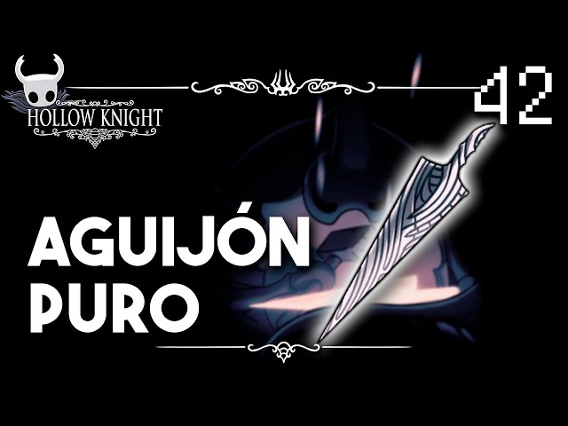
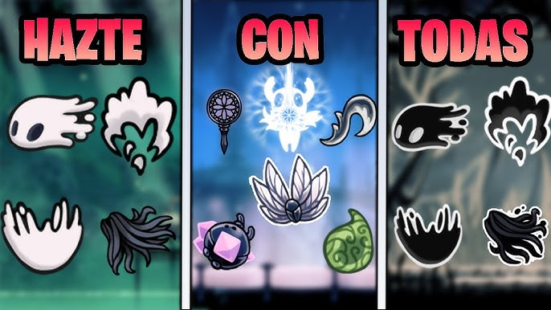
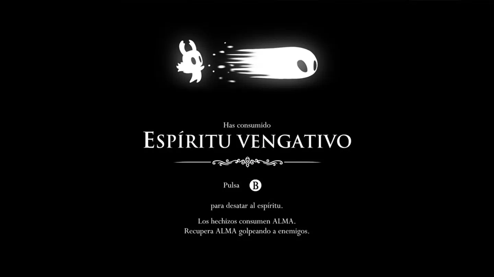
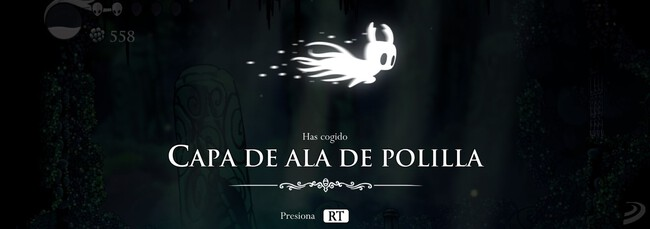
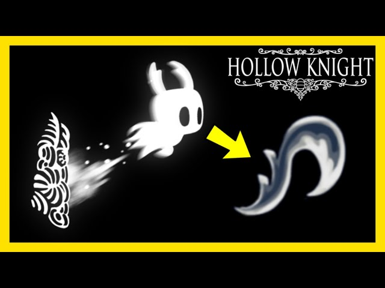
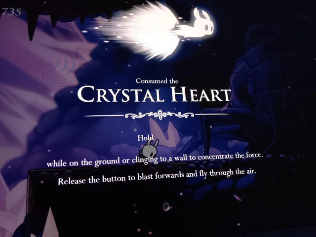
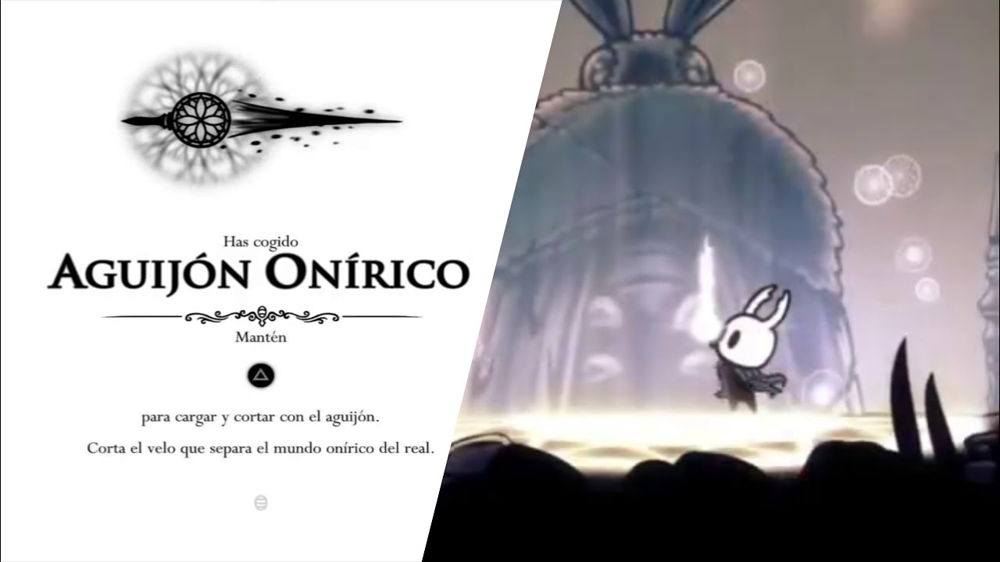
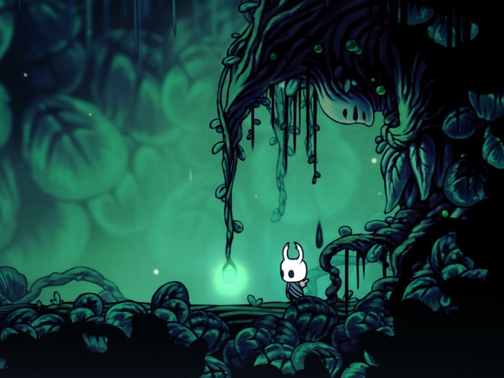
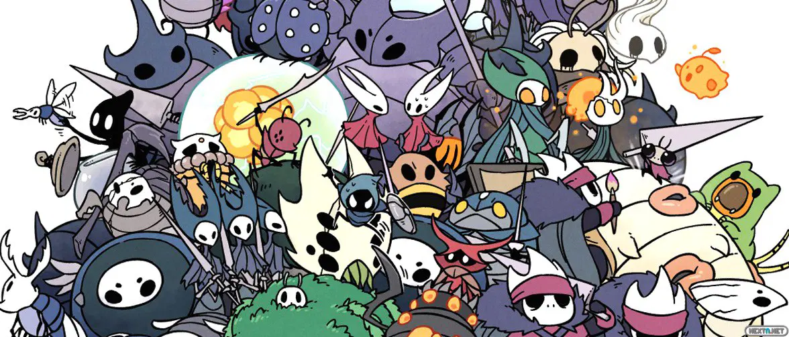

Aguijón
El aguijón es el arma principal del caballerito.

Hollow Knight es un videojuego indie que cuenta la historia de un caballero que está vacío por dentro, ya que en él solo habita la sombra de su alma. Se nos cuenta cómo este caballerito va descubriendo su misión durante su viaje. Se nos presentan varios personajes secundarios que serán interactivos durante la historia: algunos de ellos presentarán peleas y otros nos darán su ayuda incondicional. El objetivo principal del juego es liberar al reino de una infección que perjudica la vida en todo el reino; poco a poco, junto con sus avances, el caballero irá descubriendo su historia pasada.

En este juego tenemos varias herramientas clave y herramientas secundarias. A mi parecer se dividen en dos, ya que dentro del juego hay algunas que son "opcionales" porque no son necesarias para terminar el juego; sin embargo, es recomendable conseguirlas todas para el ENDGAME, ya que facilitan las peleas finales.

Ver todos los finales (abre en otra pestaña)Aquí se dan ejemplos de algunas de las herramientas principales del juego:
| Herramienta | Tipo | Función |
|---|---|---|
| Aguijón | Arma | Combate |
| Capa de polilla | Habilidad | Movimiento |
| Garras de mantis | Objeto | Escalar |
El aguijón es el arma principal del caballerito.

Espíritu Vengativo es la primera habilidad.

La capa de polilla es el objeto que nos permite hacer dash.

Las garras de mantis permiten escalar paredes.

El salto desolador es un hechizo opcional.
Habilidad indispensable de movimiento.

Sin el aguijón onírico es imposible completar el juego.

Permite nadar en ácido.

Hay varios personajes secundarios importantes, entre ellos Hornet, la protagonista de Silksong.

| Personaje | Descripción | Enlace |
|---|---|---|
| Hornet | Personaje secundario principal | Ver página de Hornet |
| Quirrel | Acompaña al caballero durante el viaje | Ver página de Quirrel |
| Zote | Personaje narcisista | Ver página de Zote |
| Cornifer | Vendedor de mapas del reino | Ver página de Cornifer |
| Ciervocaminos | Transporte principal del caballerito | Ver página de Ciervocaminos |